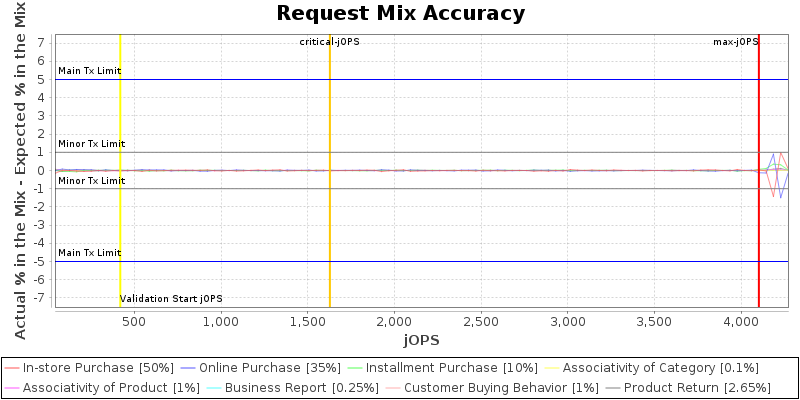

| Poseidon Technologies STAR T2 | INVALID RESULT: 4103 SPECjbb2015-Composite max-jOPS 1628 SPECjbb2015-Composite critical-jOPS |
||
| Tested by: Neptune Corp. | Test Sponsor: ABC Corp | Test location: Santa Monica, CA | Test date: Apr 25, 2005 |
| SPEC license #: 50 | Hardware Availability: May-2000 | Software Availability: May-2000 | Publication: MMM DD, YYYY |
|
SPECjbb2015-Composite: Single JVM/Single Host
(# of groups: 1) |
|
|
|
|
||||||||||||||||||||||||||||||||||||
|
|
|||||||||||||||||||||||||||||||||||||||||||||||||||||||||||||||||||||||||||||||||||||||||||||||||||||||||||||||||||||||||||||||||||||||||
|  |
|
| This section lists properties only set by user; use -defaultProps reporter option to list all properties |
| User did not set any property for this run |
| Level: COMPLIANCE | ||
| Check | Agent | Result |
| Check properties on compliance | All | PASSED |
| Level: CORRECTNESS | ||
| Check | Agent | Result |
| Compare SM and HQ Inventory | All | PASSED |